Route Properties
The Route Properties button opens a new dialog with settings that can be changed for each route. Edit Route Properties parameters and settings to provide ETE and ETA:
-
Plan Speed
-
Departure Date and Time
-
Tidal Column - Tide at Waypoints
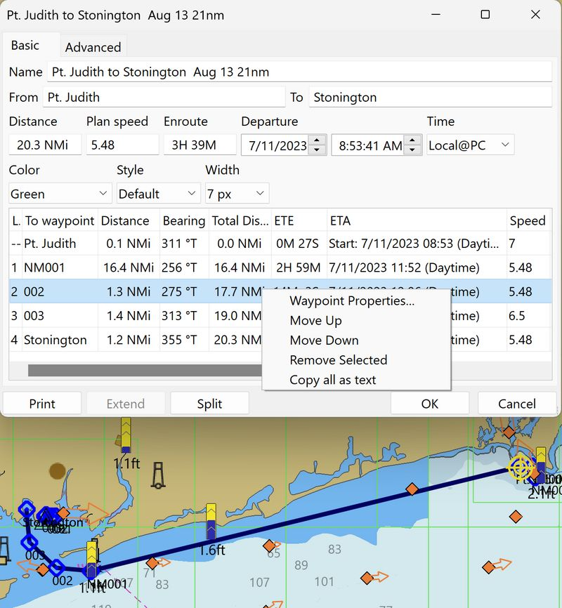
Edit Waypoint Properties
Right-click over the Waypoint. A new dialog opens to allow selection of:
-
Move Up
-
Move Down
-
Remove selected
-
Copy all as text
Selecting "Waypoint Properties" permits changing the default name, "002" in this case, to something else. Read more in the Marks section. The last entry, "Copy all as text" copies all Route Properties for pasting into a Text or Spreadsheet document.
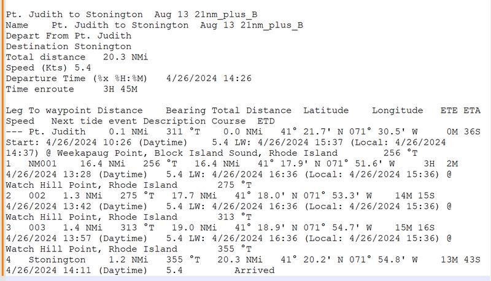
Plan Speed
The overall planned speed for the route, 5.48 (circles), is used for all route legs, unless overridden by a speed entry under each leg, 7 and 6.5 (boxes). The Plan Speed value is persistent and will be used for further routes, unless changed. The default value is 6.0 knots.
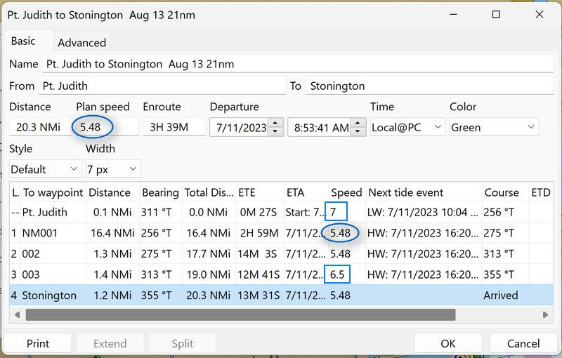
Departure Time
For Planning: With no departure time the ETE (Estimated Time En route) is calculated. Route is Inactive and normal calculation is ETE. The ETE will be calculated from the First Waypoint of the Route. 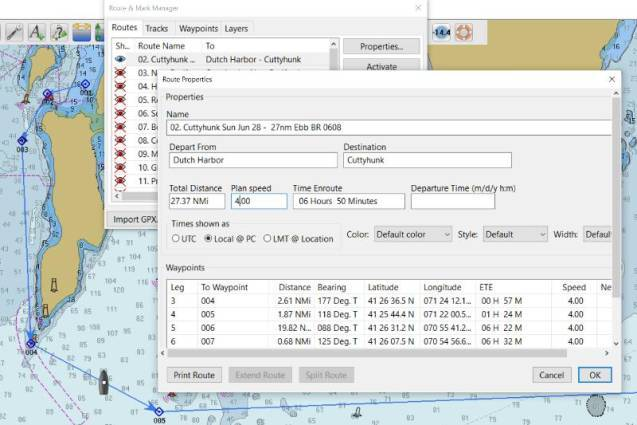
ETA for Planning - Date & Time
Document with User Steps for these ETA features.
-
Route can be Inactive or Active.
-
Enter a Departure Date and Time eg: 06/07/2014 14:00 and the ETA will be calculated.
-
Make sure to press "Enter-Return" after entering a departure time. This guarantees that the entered time is used in calculations.
-
The ETA will be calculated from OwnShip to the first Waypoint of the Route and then for each waypoint.
-
Note the Active Waypoint Console This Leg.
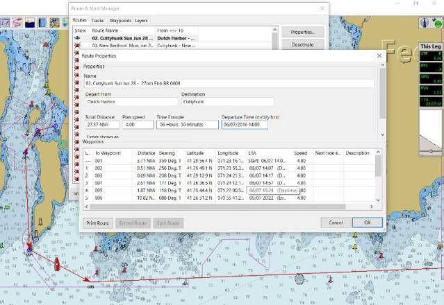
Time UTC is a new name for GMT. LMT is a local mean time based on the present longitude. For Local Zone Time one can also enter the keyword "Now".
Color Set the displayed color of the track or keep the default.
Style Solid, dashes, dots, a combination or keep the default.
Width Set the width of the track or keep the default. Marking a line with the leg number and the destination Waypoint in the Properties Dialog also marks the Waypoint on the chart with a blue square.
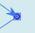
Route Properties Lower Selections
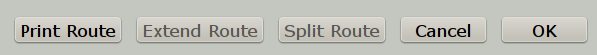
Print Route
Print Route button. It is possible to first select what features to print before being sent to the normal print routine.
Extend Route
Extending is possible only when it is obvious, what should be joined with the current route (current=visible in the Dialog).
-
Eligible are all visible route points shared with, or lying nearby to the current route’s endpoint. If there is exactly 1 such point, then it is considered obvious, and the Extend button is enabled. If there are more, some should be hidden before proceeding, until just 1 remains.
-
Routes are extended forward, based on the geographic location, next route point must be very near, as when mouse-extending the route. If the next route point is to far away for extending, just create the joining leg and extend twice.
Split Route
For splitting, the split point is selected as the row in the listing. The point-of-split becomes part of both new routes (shared) or tracks (cloned). Original route-track is deleted.
-
Here is a basic example of first splitting then extending. The test route is shown below *
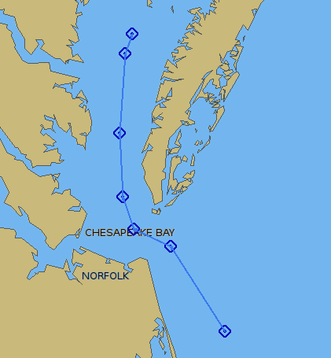
-
Split Test_A In the Route Managers property dialog for the route we have selected a waypoint where we would like to split the route. The "Split Test" Route now consists of two parts, that has been renamed. *
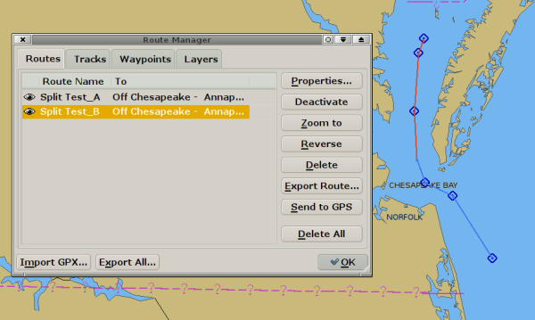
-
Next we extend the first leg "Split Test_A" with the second leg "Split Test_B". This extended route is now named "Split Test_B_plus.
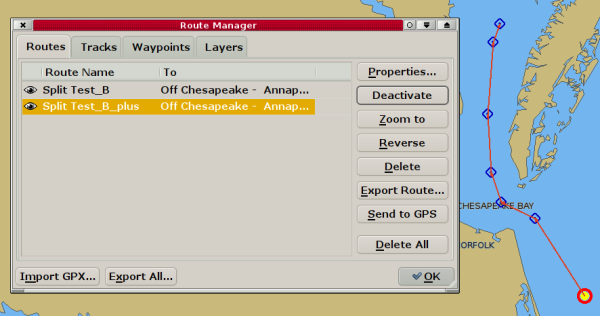
Split by Right Click on a Route
The right-click context menu (not through properties) has a new option : Split …. As an example let’s start with a route "namex" with the points A;B;C;D If we right-click on the point B, then select "Split at waypoint" the route becomes: *
-
first route "namex-A" with A;B
-
second route "namex_B" with B;C;D.
-
Exactly the same split function as in the route properties dialog.
If we right-click on the leg B to C, then select "split around leg" the route becomes:
-
first route "namex_A" with A;B
-
second route "namex_B" with C;D
-
in this case the leg clicked B to C has disappeared
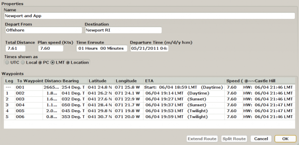